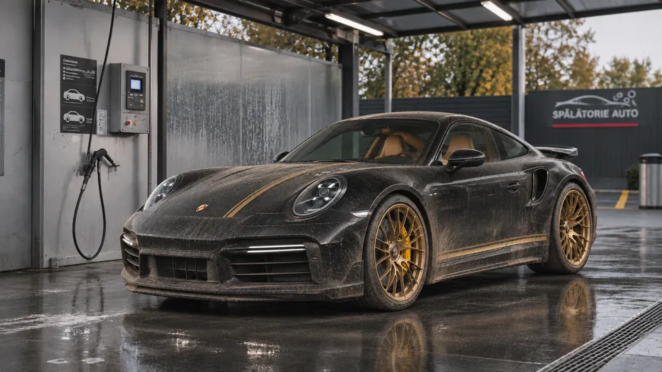
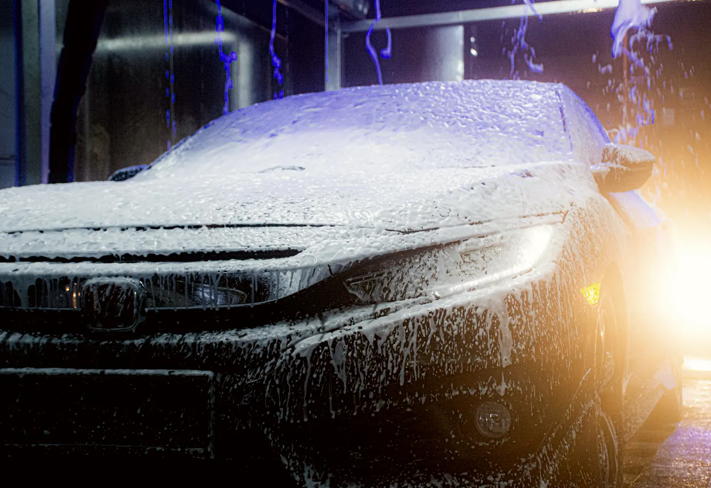
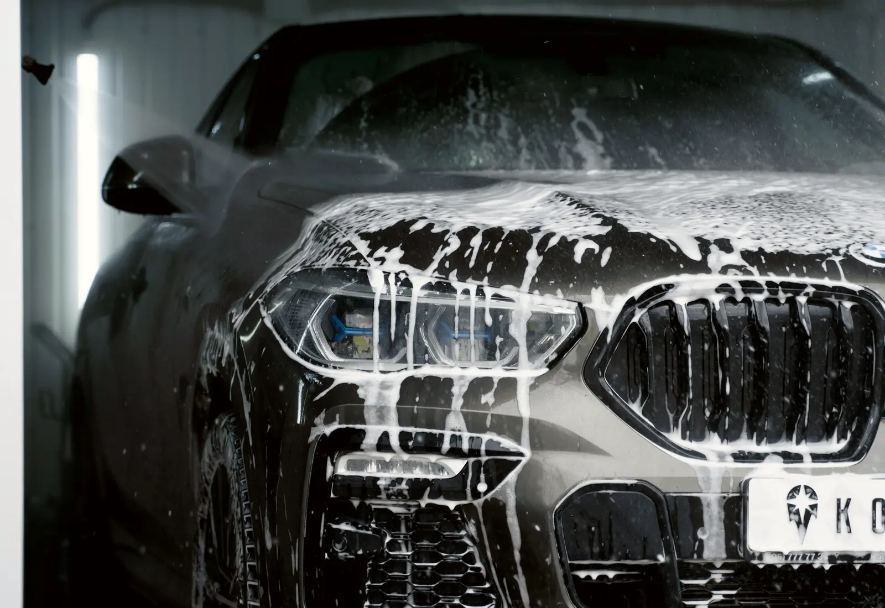
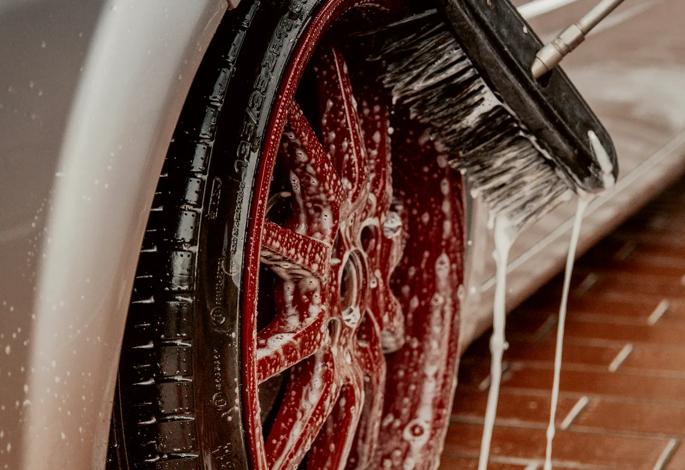
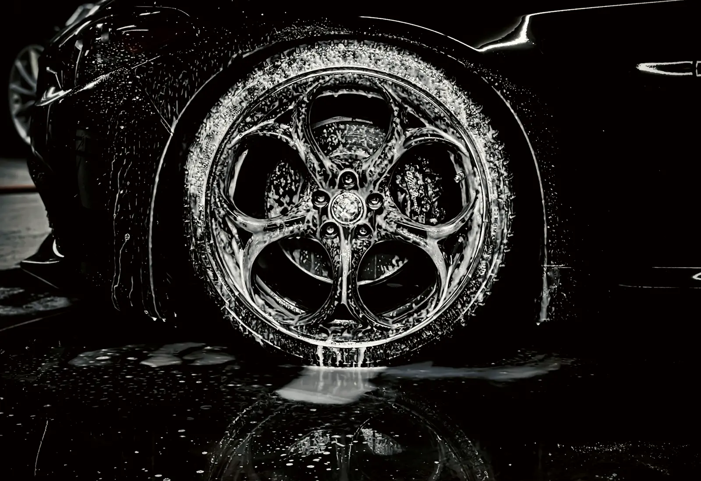
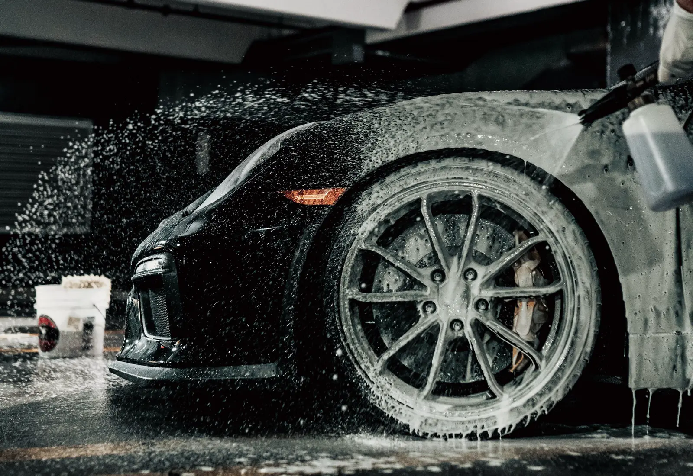
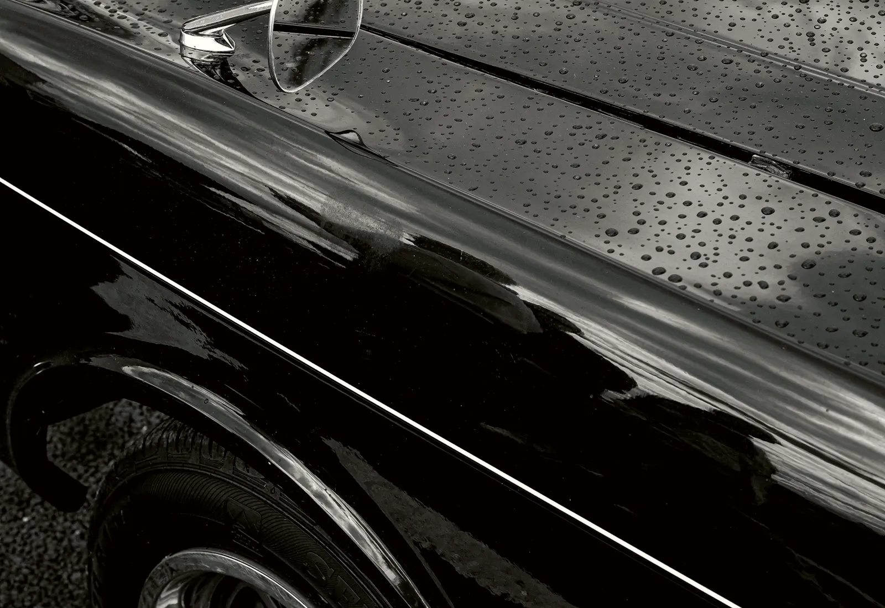
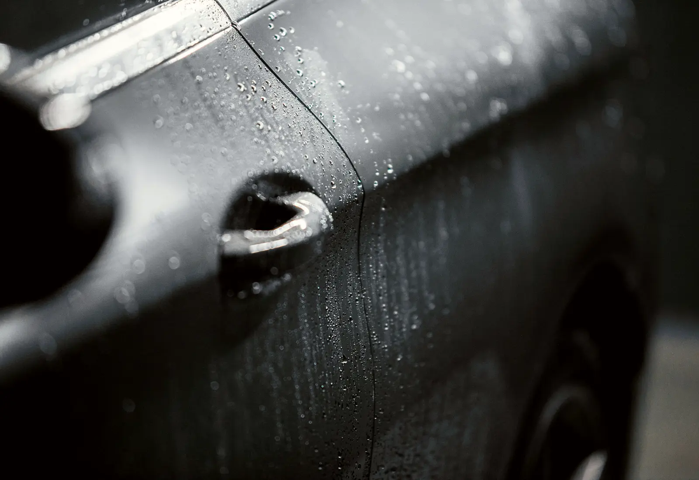
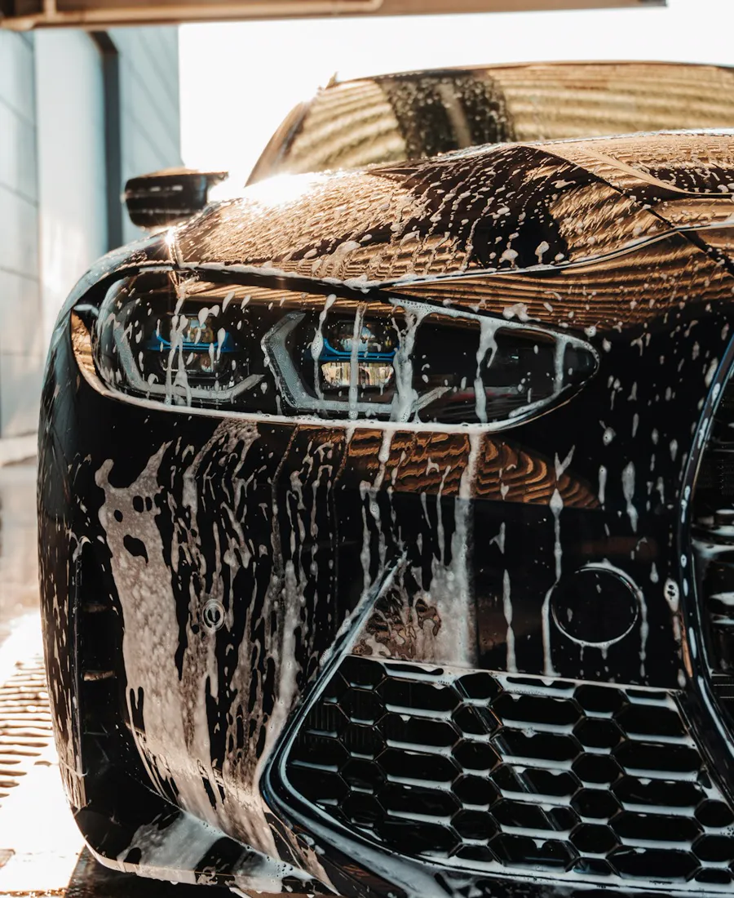

01
Pre-wash
A low-pressure pre-soak that loosens road film, salt and insects before the real wash starts.

Pink active foam, hot-water shampoo and a spot-free osmosis rinse. Self-service bays, open day and night, for every car.
A low-pressure pre-soak that loosens road film, salt and insects before the real wash starts.

Thick, coloured snow foam that clings to the paint and lifts the dirt away. The part everyone films.

Warm water and shampoo at high pressure, worked from the roof down.

A soft brush fed with foam for stubborn spots. Rinse it first, then go gently.

A stronger mix for brake dust on the wheels and insects on the bumper and mirrors.

Clean water at full pressure to carry every trace of soap away.

A thin wax layer for gloss and protection. Water beads and slides straight off.

Demineralised osmosis water as the final pass, so the car air-dries without water marks.
Pay only for the time you use. Most cars are done in a few minutes.
Card, contactless, coins or tokens. The display counts down your time.
Turn the dial. Start with the pre-wash, then the pink foam.
Roof first, wheels last. Switch programs whenever you like.
Liquid wax, spot-free rinse, then drive out.
Foam. Wash. Rinse. Wax. Drive away fresh.
